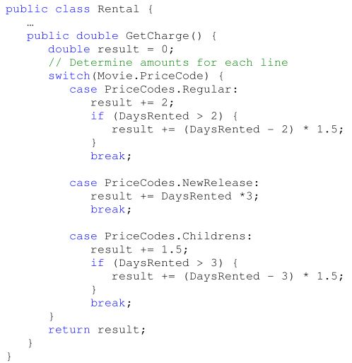
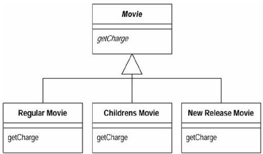
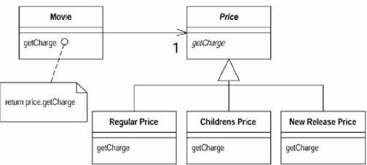

Runde 5¶
Nachdem die ersten Optimierungen eher im Bereich der strukturierten Programmierung gelegen sind, kann man auch Optimierungen durch Veränderungen objektorientierter Elemente bewirken
Methoden herausnehmen¶
Das switch-Statement der get_Charge()-Methode basiert auf Attributen einer anderen Klasse (Movie). Es wäre damit besser in der Movie-Klasse aufgehoben.
public class Movie {
…
public double GetCharge(int daysRented) {
double result = 0;
// Determine amounts for each line
switch(this.PriceCode) {
case PriceCodes.Regular:
result += 2;
if (daysRented > 2) {
result += (daysRented - 2) * 1.5;
}
break;
case PriceCodes.NewRelease:
result += daysRented *3;
break;
case PriceCodes.Childrens:
result += 1.5;
if (daysRented > 3) {
result += (daysRented - 3) * 1.5;
}
break;
}
return result;
}
}
Die Methode benötigt allerdings die Informationen über die Mietdauer(daysRented). Dies ist beim Aufruf aus Movie heraus zu übergeben.
public class Rental {
…
public double GetCharge() {
return Movie.GetCharge(DaysRented);
}
}
Lösung
classe Movie
{
....
public int GetFrequentRenterPoints()
{
if (this.PriceCode == PriceCodes.NewRelease && DaysRented > 1)
return 2;
else
return 1;
}
}
public class Rental {
…
public int GetFrequentRenterPoints() {
return Movie.GetFrequentRenterPoints(DaysRented);
}
}
Polymorphie¶
Die Movie-Objekte errechnen die Gebühren in Abhängigkeit von ihrem PriceCode. Dies wäre eigentlich ein idealer Ansatz für Vererbung.
Eine Lösung, die die oben möglichen Nachteile ausschließt, wäre die Anwendung des Strategy- bzw. State-Pattern.
State-Pattern
Erstellen Sie ein Klassendiagramm, welches das State-Pattern auf die Movie-Klasse im Zusammenhang mit der Preisermittlung anwendet.
